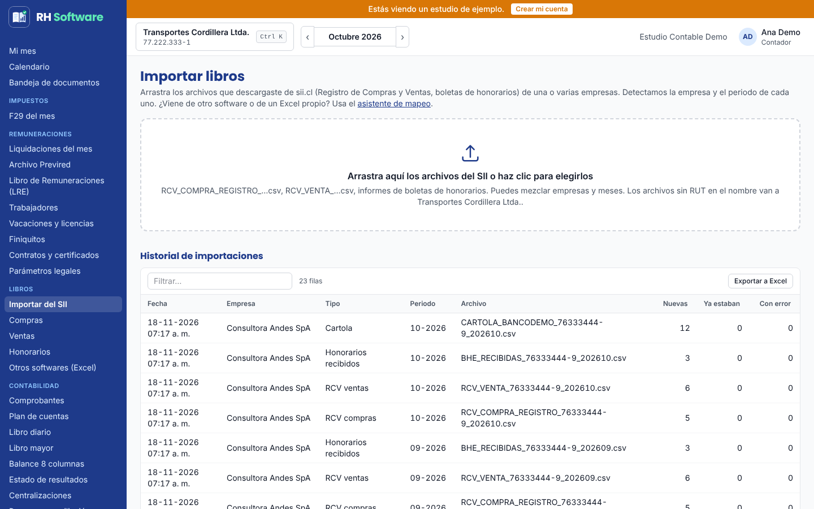
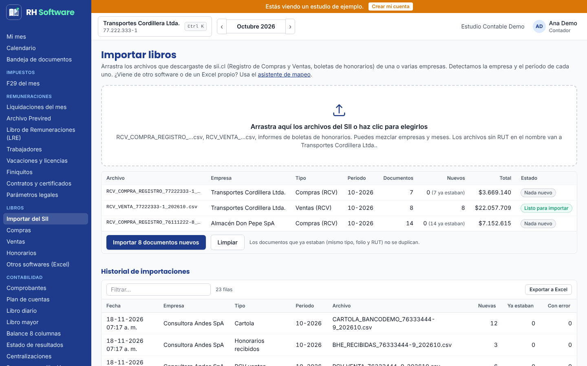
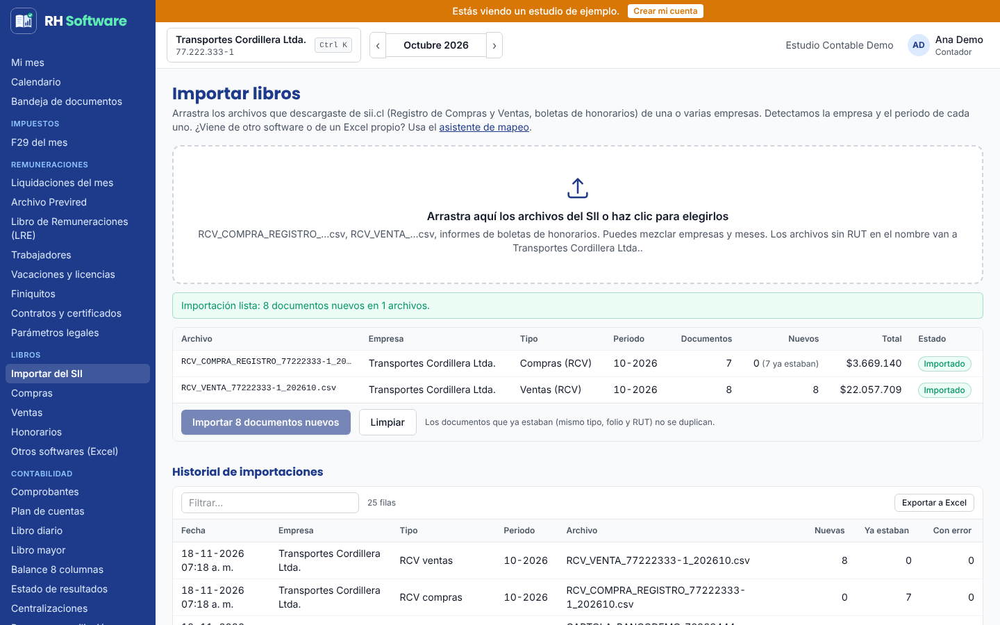
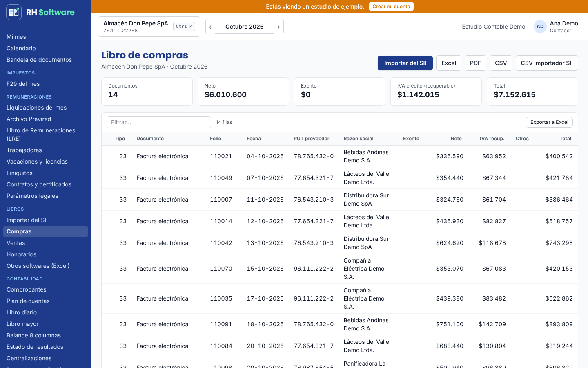
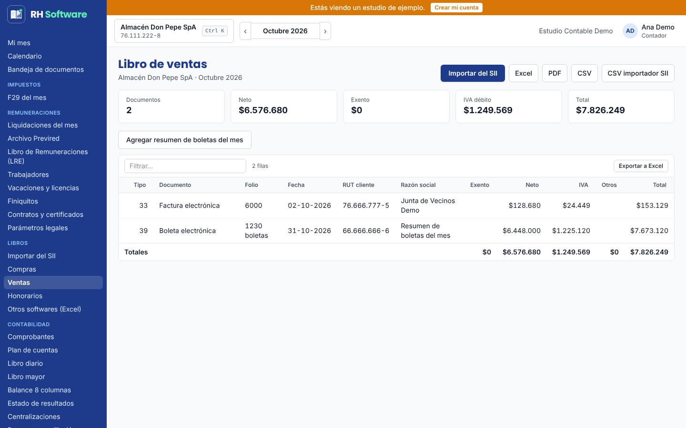
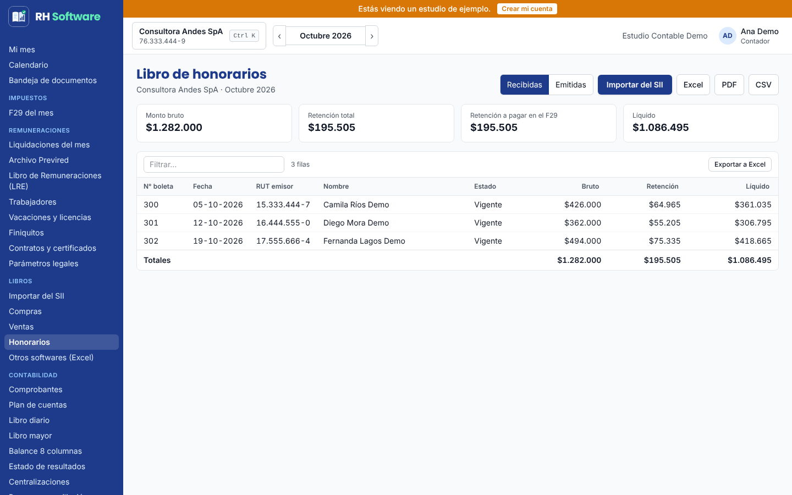
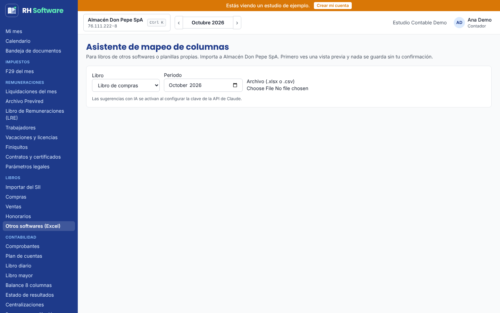
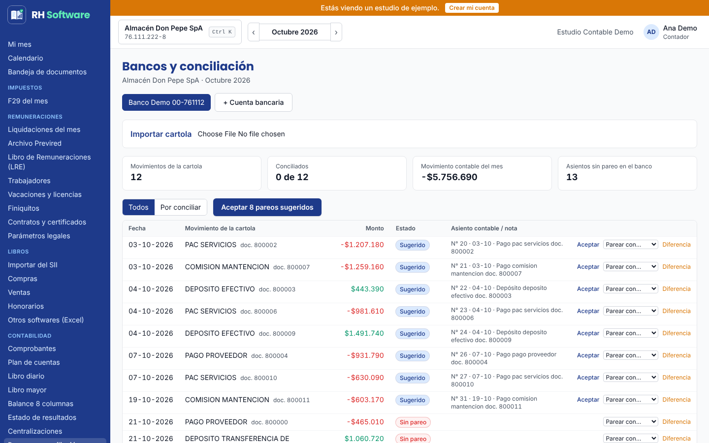
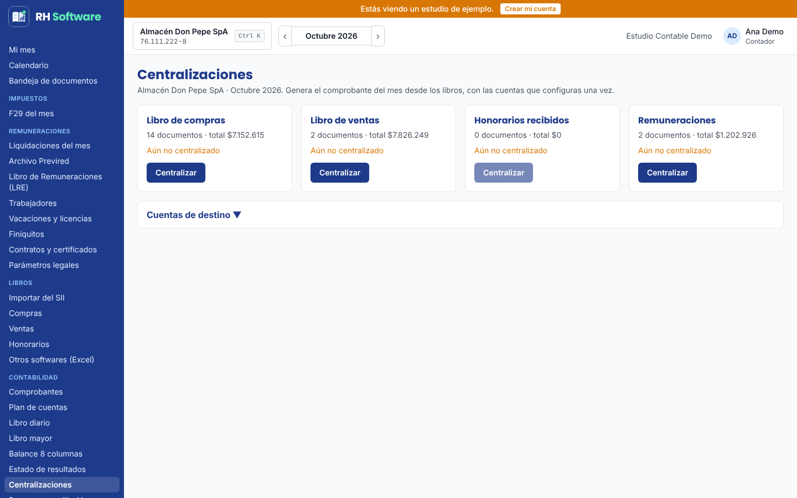

Recorrido en video
Pantallas en orden de uso









Archivos de ejemplo generados
- libro_compras_76111222-8_202610.xlsx — Libro de compras de octubre en Excel.
- libro_compras_76111222-8_202610.pdf — Libro de compras en PDF.
- libro_ventas_importador_sii_76111222-8_202610.csv — Libro de ventas en el CSV (punto y coma) del importador de libros del SII.
- libro_honorarios_recibidas_76333444-9_202610.xlsx — Libro de honorarios recibidos en Excel.
- rhsoftware_76111222-8_2026.zip — Exportación completa del año en ZIP (respaldo o cambio de contador).
Qué debe verificar la socia contadora
- Que el CSV del SII de prueba tenga las mismas columnas que los que ella descarga (comparar con un archivo real).
- Las cuentas de las centralizaciones.